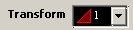
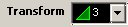
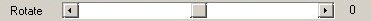
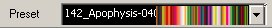

So now we have the shape of the fractal. Lets do something about the color. There are two main ways of controlling the fractal's color in Apophysis. The gradient controls what colors are used to color your fractal, and the color tab in the transform editor controls how the coloring is actually done. Right now I'm going to use whatever default gradient was randomly applied to your fractal, and tell you how to change it after we add more than one color to the fractal.
You can color it lots of different ways, but I'll show you my favorite, and in a later tutorial, I'll explain how the coloring actually works. For now, in the Transform Editor, on the right-hand side, select the Colors tab .
Select transform 1, . Put the color slider all the way to the right. The value of the transform color will show 1.000.
Select transform 3, (the middle transform) . Put the color slider all the way to the right. The value of the transform color will show 1.000.
Leave transform two's color slider alone, and voilà! We have my favorite way of coloring a wing.
If you don't like this particular way of coloring, play around with the sliders some more. For an explanation of why the fractals color the way they do, look in a later chapter.
So, we now like the way the wing is colored, but what if we actually want to change the colors?
It's time to look at the gradient editor. Quit out of the transform editor and go back to the main apophysis window. Click on the gradient button . This will open up the gradient editor, shown below. Technically, the window you open is called the Adjust window and the gradient editor is the gradient tab within the adjust window, but I like to call it the gradient editor because that's what it is.
In the Gradient Menu, you can see the Gradient, which shows you what colors are being used to color your fractal.
You can also see the rotate slider.  If you move the slider, you can watch the order of the colors change on your fractal.
But what if you want to completely change the color scheme? Then you need to look at the presets menu.  Click on the arrow button to show the gradients in the preset menu.
I happen to like gradient 302 with a rotation of 72, so that's what I will pick to color my wing.
I happen to like gradient 302 with a rotation of 72, so that's what I will pick to color my wing.
And that gives me this beautiful wing!